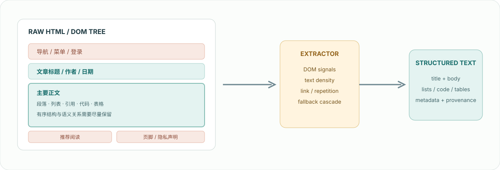
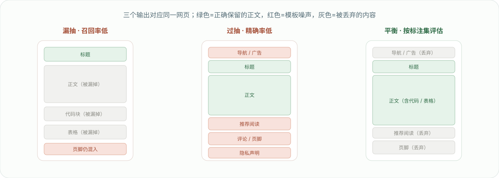

MODULE 03 / LLM DATA ENGINEERING
网页正文提取
从 HTML DOM 中识别真正的主内容，理解精确率、召回率、抽取工具和可复现评估集。
为什么把 HTML 标签全部删除，仍然得不到一篇“干净的文章”？因为网页结构中同时包含内容与模板，而抽取任务需要判断哪些片段属于主要信息。
HTML 是一棵树，正文只是树中的一部分
一个网页可能包含标题、正文、代码、表格、导航、推荐阅读、广告、版权声明、评论、页脚和隐藏元素。简单地移除标签只能得到 DOM 中的文本节点，不能判断它们的语义角色。

抽取器通常要综合考虑 DOM 结构、文本密度、段落长度、链接比例、重复模板、标题层级和页面元数据。不同网站的布局差异巨大，因此不存在对所有网页都完美的单一规则。
先定义质量，再比较抽取器
可以把人工标注的正文片段视为 gold set。抽取器输出的片段中，正确保留的部分是 TP，误把导航或广告保留下来的是 FP，漏掉的真实正文是 FN。
精确率高，说明输出较少混入模板；召回率高，说明较少漏掉正文。二者往往存在权衡。对于新闻语料，评论区可能是噪声；对于论坛语料，评论和回复本身可能就是主要内容。因此评估集必须代表你的目标数据源。

Trafilatura：一个可配置的正文抽取基线
Trafilatura 是面向网页文本发现与抽取的 Python 工具。其文档描述了主内容抽取、元数据提取、列表、引用、代码、表格等结构支持，并提供以自有规则抽取器为主、结合 jusText 与 readability-lxml 等回退机制的处理路径。
最小示例：
import trafilatura
with open("page.html", "rb") as file:
html = file.read()
result = trafilatura.extract(
html,
url="https://example.org/article",
output_format="json",
with_metadata=True,
include_comments=False,
include_tables=True,
)
if result is not None:
print(result)在批量处理时，不要只保存抽取后的字符串。建议同时保存原始 URL、crawl 时间、提取器版本、配置、输出格式、标题/作者/日期元数据，以及失败原因。必要时保留 WARC 定位信息，以便抽取器升级后重新处理。
建立自己的抽取评估集
从真实 crawl 中按网站类型分层抽样，至少覆盖新闻、博客、论坛、文档、商品页、百科、代码托管页面和多语言网页。为每页标注主要正文范围，并记录标题、作者、日期、代码块、表格、列表、评论是否应保留。
| 维度 | 测量方式 | 诊断的问题 |
|---|---|---|
| 正文精确率 / 召回率 | 对比人工标注片段 | 模板混入多少？真实正文漏掉多少？ |
| 结构保真 | 标题、列表、代码、表格分别统计 | 文本是否被压平成不可读片段？ |
| 元数据准确率 | 标题、作者、日期字段匹配 | 是否把站点名或推荐标题当成文章标题？ |
| 失败与覆盖 | 空输出、异常、非 HTML、超长页占比 | 是否只在“容易网页”上表现好？ |
| 下游影响 | 固定训练预算的数据消融 | 抽取差异是否改变目标模型表现？ |
不要把某篇论文的下游准确率直接挪用为你的抽取器性能。没有公开标注集、相同抽取配置和受控训练预算时，跨项目数字不可直接比较。
交互练习：抽取策略的取舍
下面是一个教学用的合成网页片段。切换策略，观察输出中哪些片段被保留；它不是 Trafilatura 的真实运行结果。
网页片段： 导航：主页 / 新闻 / 登录；标题：如何训练语言模型；正文：先准备语料，再进行清洗和去重；推荐阅读：十个热门工具；页脚：隐私政策。
直接剥离标签：导航、标题、正文、推荐阅读和页脚都会变成文本，模板噪声混在一起。
本章参考资料
- Trafilatura documentation：抽取能力、输出格式与基本用法。
- Trafilatura evaluation：精确率、召回率及不同抽取方案的评估边界。
- Barbaresi (2021), Trafilatura: A Web Scraping Library and Command-Line Tool for Text Discovery and Extraction.
- Penedo et al. (2024), FineWeb §3.2 Text extraction.